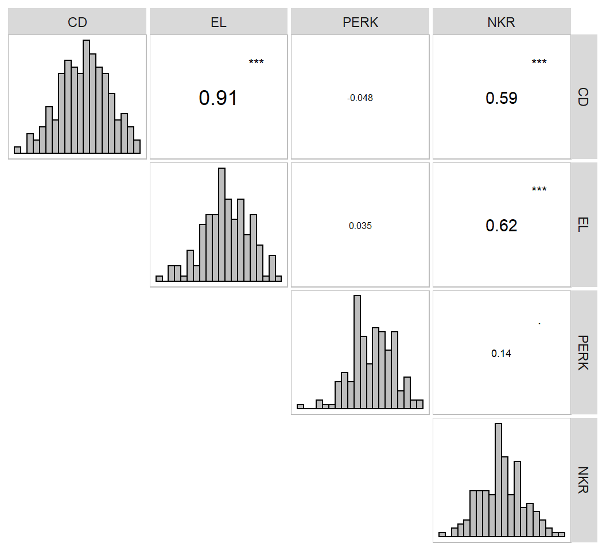
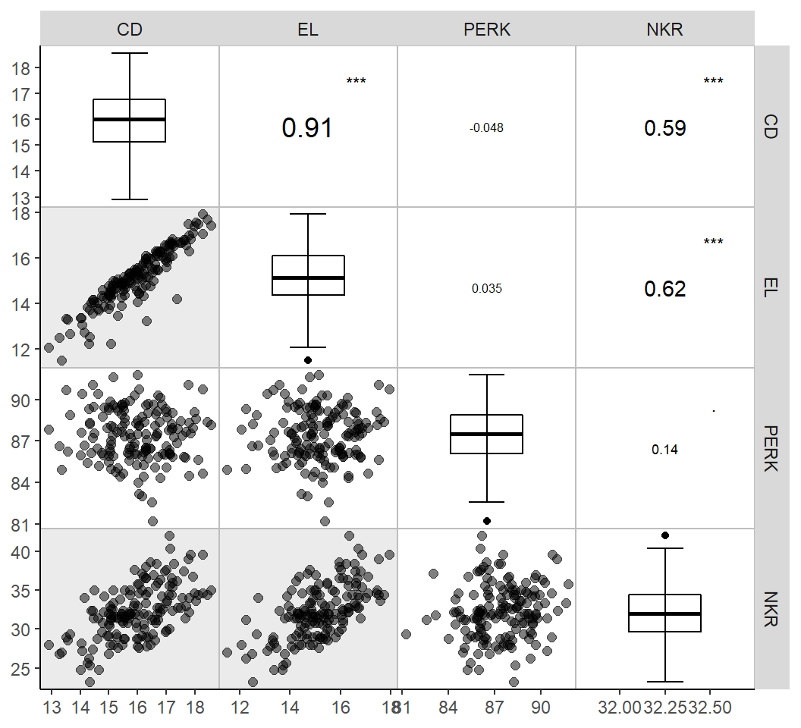
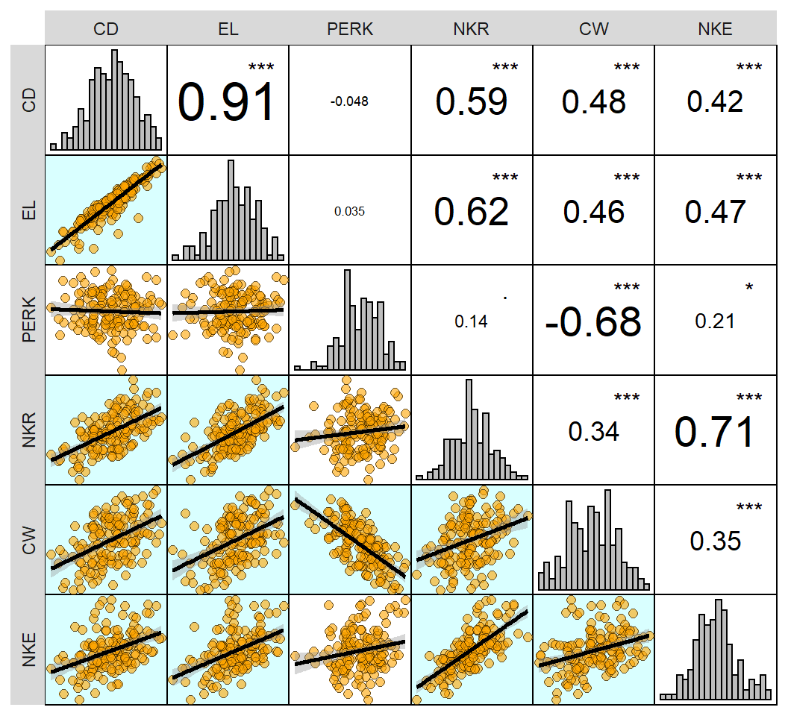
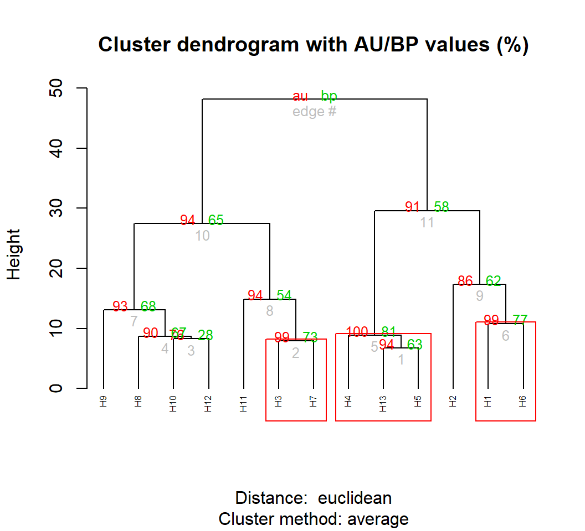
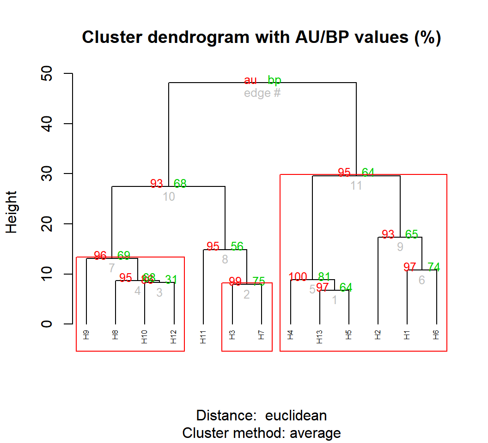
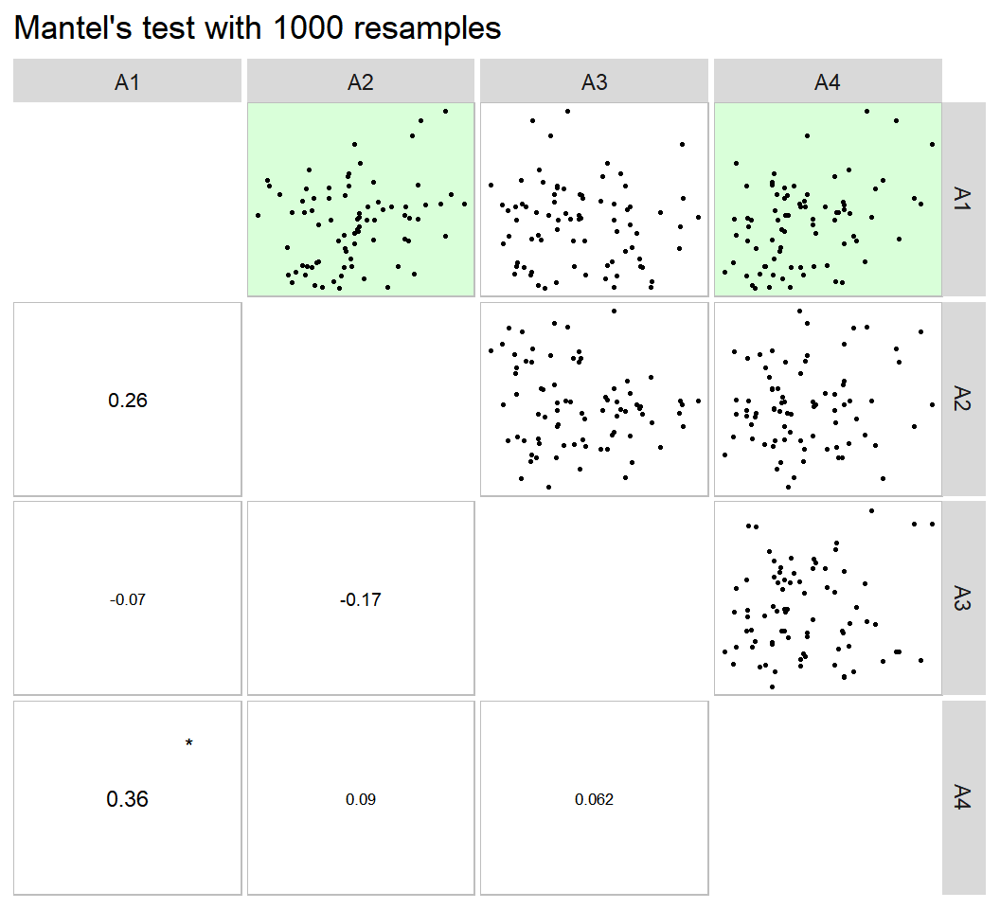

Useful functions for biometrical models
Source:vignettes/vignettes_biometry.Rmd
vignettes_biometry.Rmdlibrary(metan)
library(cowplot)
library(kableExtra) # Used to make the tables
library(tidyverse) # used for the forward-pipe operator %>%
# Function to make HTML tables
print_table = function(table){
kable(table, "html", digits = 3) %>%
kable_styling(bootstrap_options = c("striped", "hover", "condensed", "responsive"),
font_size = 12)
}Find possible outliers in a data frame
The function find_outlier() may be used to identify possible outliers in a dataframe. It is suggested that before applying any statistical procedures, outliers be checked out.

Number of possible outliers: 1
Lines: 12
Proportion: 0.6%
Mean of the outliers: 26
Maximum of the outliers: 26 | Line 12
Minimum of the outliers: 26 | Line 12
With outliers: mean = 2.634 | CV = 72.605%
Without outliers: mean = 2.483 | CV = 13.46%To check the outliers in different levels of a factor, the function split_factors() is used. As an example, we will find possible outliers for each level of the factor ENV.
----------------------------------------------------------------------------
Level: A1
----------------------------------------------------------------------------
No outlier identified.
----------------------------------------------------------------------------
Level: A2
----------------------------------------------------------------------------
No outlier identified.
----------------------------------------------------------------------------
Level: A3
----------------------------------------------------------------------------
Number of possible outliers: 4
Lines: 7 11 14 15
Proportion: 11.4%
Mean of the outliers: 2.438
Maximum of the outliers: 2.766 | Line 11
Minimum of the outliers: 1.71 | Line 7
With outliers: mean = 2.167 | CV = 10.309%
Without outliers: mean = 2.136 | CV = 7.377%
----------------------------------------------------------------------------
Level: A4
----------------------------------------------------------------------------
No outlier identified. Descriptive statistics
The function desc_stat() may be used to compute measures of central tendency, position, and dispersion.
# A tibble: 23 x 7
Statistic CD CL CW EL EP NR
<chr> <dbl> <dbl> <dbl> <dbl> <dbl> <dbl>
1 AV.dev 0.948 1.98 5.21 0.995 0.0459 1.30
2 CI.mean 0.185 0.365 0.990 0.199 0.00891 0.259
3 CV 7.34 7.95 25.2 8.28 10.5 10.2
4 IQR 1.65 3.70 9.19 1.73 0.0820 2.40
5 Kurt -0.413 -0.791 -0.709 -0.0927 -0.429 0.154
6 max 18.6 34.7 38.5 17.9 0.660 21.2
7 mean 16.0 29.0 24.8 15.2 0.537 16.1
8 median 16 28.7 24.5 15.1 0.544 16
9 min 12.9 23.5 11.1 11.5 0.386 12.4
10 n 156 156 156 156 156 156
# ... with 13 more rowsTo compute the statistics for each level of a factor, use the function split_factor() before calling desc_stat(). In addition, it is possible to select the statistics to compute using the argument stats, that is a comma-separated vector of names with " at the beginning and end of vector only.
- This will work:
stats = c("mean, SE.mean, CV, max, min")stats = "mean"
- This will NOT work:
stats = c("mean, "SE.mean", "CV", "max", "min")stats = c("mean,SE.mean, CV, max,min")
data_ge2 %>%
split_factors(ENV) %>%
desc_stat(EP, EL, CL, CD, CW, NR,
stats = c("mean, SE.mean, CV, max, min"))---------------------------------------------------------------------------
A1
---------------------------------------------------------------------------
# A tibble: 5 x 7
Statistic CD CL CW EL EP NR
<chr> <dbl> <dbl> <dbl> <dbl> <dbl> <dbl>
1 CV 6.62 7.53 20.0 7.54 7.75 11.7
2 max 18.3 34.7 38.5 17.5 0.658 21.2
3 mean 16.4 29.7 28.3 15.6 0.567 16.9
4 min 14.1 25.9 17.8 12.2 0.470 13.6
5 SE.mean 0.174 0.358 0.906 0.189 0.00703 0.315
---------------------------------------------------------------------------
A2
---------------------------------------------------------------------------
# A tibble: 5 x 7
Statistic CD CL CW EL EP NR
<chr> <dbl> <dbl> <dbl> <dbl> <dbl> <dbl>
1 CV 8.46 8.88 29.1 8.95 12.1 9.13
2 max 18.3 33.0 35.7 17.9 0.640 18
3 mean 15.9 28.5 23.8 15.2 0.527 15.8
4 min 13.3 23.9 11.1 12.5 0.410 13.2
5 SE.mean 0.215 0.405 1.11 0.218 0.0102 0.231
---------------------------------------------------------------------------
A3
---------------------------------------------------------------------------
# A tibble: 5 x 7
Statistic CD CL CW EL EP NR
<chr> <dbl> <dbl> <dbl> <dbl> <dbl> <dbl>
1 CV 6.00 8.47 24.6 6.85 9.53 9.73
2 max 17.6 33.2 29.6 16.8 0.601 20.4
3 mean 15.8 28.4 20.8 14.7 0.496 15.8
4 min 14 23.5 11.5 12.2 0.386 12.4
5 SE.mean 0.151 0.386 0.818 0.161 0.00756 0.246
---------------------------------------------------------------------------
A4
---------------------------------------------------------------------------
# A tibble: 5 x 7
Statistic CD CL CW EL EP NR
<chr> <dbl> <dbl> <dbl> <dbl> <dbl> <dbl>
1 CV 7.67 6.07 17.3 8.63 7.06 8.34
2 max 18.6 32.8 34.7 17.7 0.660 18.4
3 mean 15.8 29.4 26.4 15.1 0.558 16.0
4 min 12.9 25.8 15.3 11.5 0.476 13.6
5 SE.mean 0.194 0.286 0.730 0.209 0.00631 0.214Correlations
Linear and partial correlation coefficients
Pearson’s linear correlation does not consider the influence a set of traits on the relationship between two traits. For example, the hypothetical correlation of r = 0.9 between x and y may be due to the influence of a third trait or group of traits acting together. To identify this linear effect between x and y controlling statistically the effect of others traits, the partial correlation is used. From Pearson’s simple correlation matrix, the partial correlation is calculated by the following equation:
\[ {r_{xy.m}} = \frac{{ - {a_{xy}}}}{{\sqrt {{a_{xx}}{a_{yy}}} }} \]
Where \({r_{xy.m}}\) is the partial correlation coefficient between the traits * x * and * y , excluding the effects of the m * remaining traits of the set; \(- {a_{ij}}\) is the inverse element of the correlation matrix corresponding to xy, \({a_{ii}}{a_{jj}}\) are the diagonal elements of the inverse matrix of correlation associated with trait x and y , respectively. The significance of this correlation is also tested by the test * t * according to the following expression:
\[ t_{calc} = r_{xy.m} \sqrt \frac{n-v}{1-r_{xy.m}^2} \]
Where \(t_{calc}\) is the calculated Student * t * statistic; $ r_{xy.m} $ is the partial correlation coefficient for the traits x and y excluding the effect of the other * m * traits; * n * is the number of observations; and * v * is the number of traits. Both the linear and partial correlation coefficients may be obtained using the function lpcor().
| linear | partial | t | prob | |
|---|---|---|---|---|
| NR x NKR | 0.021 | -0.767 | -14.798 | 0 |
| NR x NKE | 0.626 | 0.866 | 21.414 | 0 |
| NKR x NKE | 0.708 | 0.891 | 24.335 | 0 |
# Compute the correlations for each level of the factor ENV
lpc2 = data_ge2 %>%
split_factors(ENV) %>%
lpcor(verbose = FALSE) # Don't show the result in the consoleUsing the pairs_mantel() function, it is possible to compute a Mantel’s test (Mantel 1967) for all pairwise correlation matrices of the above example.

This same plot may be obtained by passing correlation matrices with the same dimension to an object of class lpcor and then applying the function pairs_mantel().
as.lpcor(cor(data_ge2[1:30, 5:ncol(data_ge2)]),
cor(data_ge2[31:60, 5:ncol(data_ge2)]),
cor(data_ge2[61:90, 5:ncol(data_ge2)]),
cor(data_ge2[91:120, 5:ncol(data_ge2)]),
cor(data_ge2[121:150, 5:ncol(data_ge2)])) %>%
pairs_mantel(diag = TRUE,
pan.spacing = 0,
shape.point = 21,
col.point = "black",
fill.point = "red",
size.point = 1.5,
alpha.point = 0.6,
main = "My own plot",
alpha = 0.2)
Graphical and numerical visualization of a correlation matrix
The function corr_plot() may be used to visualize (both graphically and numerically) a correlation matrix. Pairwise of scatterplots are produced and may be shown in the upper or lower diagonal, which may be seen as a nicer and customizable ggplot2-based version of the pairs()base R function.


corr_plot(data_ge2, CD, EL, PERK, NKR,
shape.point = 19,
size.point = 2,
alpha.point = 0.5,
alpha.diag = 0,
pan.spacing = 0,
diag.type = "boxplot",
col.sign = "gray",
alpha.sign = 0.3,
axis.labels = TRUE)
corr_plot(data_ge2, CD, EL, PERK, NKR, CW, NKE,
prob = 0.01,
shape.point = 21,
col.point = "black",
fill.point = "orange",
size.point = 2,
alpha.point = 0.6,
maxsize = 4,
minsize = 2,
smooth = TRUE,
size.smooth = 1,
col.smooth = "black",
col.sign = "cyan",
col.up.panel = "black",
col.lw.panel = "black",
col.dia.panel = "black",
pan.spacing = 0,
lab.position = "tl")
(co)variance and correlations for designed experiments
The function covcor_design() may be used to compute genetic, phenotypic and residual correlation/(co)variance matrices through Analysis of Variance (ANOVA) method using randomized complete block design (RCBD) or completely randomized design (CRD).
The phenotypic (\(r_p\)), genotypic (\(r_g\)) and residual (\(r_r\)) correlations are computed as follows:
\[ r^p_{xy} = \frac{cov^p_{xy}}{\sqrt{var^p_{x}var^p_{y}}} \ r^g_{xy} = \frac{cov^g_{xy}}{\sqrt{var^g_{x}var^g_{y}}} \ r^r_{xy} = \frac{cov^r_{xy}}{\sqrt{var^r_{x}var^r_{y}}} \]
Using Mean Squares (MS) from the ANOVA method, the variances (var) and covariances (cov) are computed as follows:
\[ cov^p_{xy} = [(MST_{x+y} - MST_x - MST_y)/2]/r \\ var^p_x = MST_x / r \\ var^p_y = MST_y / r \]
\[ cov^r_{xy} = (MSR_{x+y} - MSR_x - MSR_y)/2 \\ var^r_x = MSR_x \\ var^r_y = MSR_y \]
\[ cov^g_{xy} = [(cov^p_{xy} \times r) - cov^r_{xy}]/r \\ var^g_x = (MST_x - MSE_x)/r \\ var^g_y = (MST_x - MSE_y)/r \]
where MST is the mean square for treatment, MSR is the mean square for residuals, and r is the number of replications.
The function covcor_design() returns a list with the matrices of (co)variances and correlations. Specific matrices may be returned using the argument type, as shown bellow.
Genetic correlations
data = subset(data_ge2, ENV == "A1")
gcor = covcor_design(data, gen = GEN, rep = REP,
resp = c(PH, EH, NKE, TKW),
type = "gcor")
print_table(gcor)| PH | EH | NKE | TKW | |
|---|---|---|---|---|
| PH | 1.000 | -0.007 | 0.280 | 0.246 |
| EH | -0.007 | 1.000 | -0.775 | 0.725 |
| NKE | 0.280 | -0.775 | 1.000 | -0.512 |
| TKW | 0.246 | 0.725 | -0.512 | 1.000 |
Phenotypic correlations
pcor = covcor_design(data, gen = GEN, rep = REP,
resp = c(PH, EH, NKE, TKW),
type = "pcor")
print_table(pcor)| PH | EH | NKE | TKW | |
|---|---|---|---|---|
| PH | 1.000 | 0.331 | 0.142 | 0.001 |
| EH | 0.331 | 1.000 | -0.439 | 0.383 |
| NKE | 0.142 | -0.439 | 1.000 | -0.552 |
| TKW | 0.001 | 0.383 | -0.552 | 1.000 |
Residual correlations
rcor = covcor_design(data, gen = GEN, rep = REP,
resp = c(PH, EH, NKE, TKW),
type = "rcor")
print_table(rcor)| PH | EH | NKE | TKW | |
|---|---|---|---|---|
| PH | 1.000 | 0.534 | 0.096 | -0.155 |
| EH | 0.534 | 1.000 | -0.232 | -0.041 |
| NKE | 0.096 | -0.232 | 1.000 | -0.634 |
| TKW | -0.155 | -0.041 | -0.634 | 1.000 |
Residual (co)variance matrix
Using the function split_factors() it is possible to pass the data grouped and compute the matrices for each level of the grouping factor. In this example we will obtain the residual (co)variance for each environment.
cov = data_ge2 %>%
split_factors(ENV, keep_factors = TRUE) %>%
covcor_design(GEN, REP, c(PH, EH, NKE, TKW),
type = "rcov")The residual (co)variance matrix and the means (obtained using type = "means") may be used into the function mahala() to compute the Mahalanobis distance
res = data %>% # environment A1
covcor_design(GEN, REP, c(PH, EH, NKE, TKW), type = "rcov")
means = data %>% # environment A1
covcor_design(GEN, REP, c(PH, EH, NKE, TKW), type = "means")
D2 = mahala(.means = means, covar = res, inverted = FALSE)
print_table(D2)| H1 | H10 | H11 | H12 | H13 | H2 | H3 | H4 | H5 | H6 | H7 | H8 | H9 | |
|---|---|---|---|---|---|---|---|---|---|---|---|---|---|
| H1 | 0.000 | 2.178 | 3.832 | 5.907 | 3.110 | 19.019 | 9.964 | 3.589 | 4.734 | 4.707 | 4.967 | 5.880 | 6.310 |
| H10 | 2.178 | 0.000 | 0.625 | 2.592 | 4.021 | 10.459 | 4.607 | 2.819 | 0.660 | 6.538 | 1.322 | 1.995 | 3.904 |
| H11 | 3.832 | 0.625 | 0.000 | 0.733 | 5.403 | 8.074 | 4.072 | 3.377 | 0.689 | 9.751 | 0.245 | 1.240 | 7.221 |
| H12 | 5.907 | 2.592 | 0.733 | 0.000 | 7.226 | 7.765 | 5.258 | 4.744 | 2.372 | 13.545 | 0.543 | 1.898 | 12.422 |
| H13 | 3.110 | 4.021 | 5.403 | 7.226 | 0.000 | 11.864 | 6.036 | 2.317 | 4.681 | 1.992 | 6.301 | 5.111 | 6.671 |
| H2 | 19.019 | 10.459 | 8.074 | 7.765 | 11.864 | 0.000 | 4.997 | 11.609 | 6.750 | 17.573 | 7.866 | 4.969 | 16.466 |
| H3 | 9.964 | 4.607 | 4.072 | 5.258 | 6.036 | 4.997 | 0.000 | 2.567 | 2.041 | 11.816 | 3.276 | 5.248 | 8.394 |
| H4 | 3.589 | 2.819 | 3.377 | 4.744 | 2.317 | 11.609 | 2.567 | 0.000 | 2.533 | 7.140 | 3.038 | 5.824 | 7.126 |
| H5 | 4.734 | 0.660 | 0.689 | 2.372 | 4.681 | 6.750 | 2.041 | 2.533 | 0.000 | 8.317 | 0.888 | 1.782 | 4.574 |
| H6 | 4.707 | 6.538 | 9.751 | 13.545 | 1.992 | 17.573 | 11.816 | 7.140 | 8.317 | 0.000 | 11.926 | 8.240 | 4.840 |
| H7 | 4.967 | 1.322 | 0.245 | 0.543 | 6.301 | 7.866 | 3.276 | 3.038 | 0.888 | 11.926 | 0.000 | 2.100 | 8.837 |
| H8 | 5.880 | 1.995 | 1.240 | 1.898 | 5.111 | 4.969 | 5.248 | 5.824 | 1.782 | 8.240 | 2.100 | 0.000 | 7.949 |
| H9 | 6.310 | 3.904 | 7.221 | 12.422 | 6.671 | 16.466 | 8.394 | 7.126 | 4.574 | 4.840 | 8.837 | 7.949 | 0.000 |
Nonparametric confidence interval for Pearson’s correlation
Recently, a Gaussian-independent estimator for the confidence interval of Pearson’s correlation coefficient was proposed by Olivoto et al. (2018). This estimator is based on the sample size and strength of associations and may be estimated using the function corr_ci(). It is possible to estimate the confidence interval by declaring the sample size (n) and the correlation coefficient (r), or using a dataframe. The following code computes the confidence interval and make a plot to show the results.

In the following examples, the confidence interval is calculated by declaring the sample size (n) and the correlation coefficient (r). If the function split_factors() is used before corr_ci() then the confidence interval will be calculated within each level of the splitting factor.
-------------------------------------------------
Nonparametric 95% half-width confidence interval
-------------------------------------------------
Level of significance: 5%
Correlation coefficient: 0.34
Sample size: 145
Confidence interval: 0.1422
True parameter range from: 0.1978 to 0.4822
------------------------------------------------- Sample size planning
-------------------------------------------------
Sample size planning for correlation coefficient
-------------------------------------------------
Level of significance: 5%
Correlation coefficient: 0.6
95% half-width CI: 0.1
Required sample size: 194
------------------------------------------------- # A tibble: 4 x 2
Description Value
<chr> <dbl>
1 Significance level (%) 95
2 Correlation 0.6
3 95% half-width CI 0.1
4 Sample size 194 Collinearity diagnostic
The following codes compute a complete collinearity diagnostic of a correlation matrix of predictor traits. Several indicators, such as Variance Inflation Factor, Condition Number, and Matrix Determinant are considered (T. Olivoto et al. 2017; Olivoto T. et al. 2017) The diagnostic may be performed using: (i) correlation matrices; (ii) dataframes, or (iii) an object of class group_factor, which split a dataframe into subsets based on one or more grouping factors.
Using a correlation matrix, which was estimated earlier
Weak multicollinearity in the matrix
NC = 30.013
Matrix determinant: 0.1247818
Largest correlation: NKR x NKE = 0.708
Smallest correlation: NR x NKR = 0.021
Number of VIFs > 10: 3
Number of correlations with r >= |0.8|: 0
Variables with largest weight in the last eigenvalues:
NKE > NKR > NR Using a dataframe
Severe multicollinearity in the matrix! Pay attention on the variables listed bellow
CN = 10106.712
Matrix determinant: 0
Largest correlation: PH x EH = 0.932
Smallest correlation: ED x CDED = -0.01
Number of VIFs > 10: 15
Number of correlations with r >= |0.8|: 4
Variables with largest weight in the last eigenvalues:
CL > ED > CDED > CW > EH > KW > PERK > PH > EP > NKE > TKW > NR > CD > NKR > EL The factors ENV GEN REP where excluded to perform the analysis. If you want to perform an analysis for each level of a factor, use the function 'split_factors() before.' Perform the diagnostic for each level of the factor ENV
----------------------------------------------------------------------------
Level: A1
----------------------------------------------------------------------------
Severe multicollinearity in the matrix! Pay attention on the variables listed bellow
CN = 14149.129
Matrix determinant: 0
Largest correlation: EL x CD = 0.912
Smallest correlation: PH x EL = -0.003
Number of VIFs > 10: 15
Number of correlations with r >= |0.8|: 3
Variables with largest weight in the last eigenvalues:
CL > CDED > ED > EH > EP > CW > PERK > PH > NKE > TKW > KW > EL > CD > NKR > NR
----------------------------------------------------------------------------
Level: A2
----------------------------------------------------------------------------
Severe multicollinearity in the matrix! Pay attention on the variables listed bellow
CN = 11310.482
Matrix determinant: 0
Largest correlation: EL x CD = 0.973
Smallest correlation: CD x CDED = -0.004
Number of VIFs > 10: 15
Number of correlations with r >= |0.8|: 8
Variables with largest weight in the last eigenvalues:
CL > ED > CDED > KW > EH > CW > PH > PERK > TKW > EP > NKE > CD > EL > NR > NKR
----------------------------------------------------------------------------
Level: A3
----------------------------------------------------------------------------
Severe multicollinearity in the matrix! Pay attention on the variables listed bellow
CN = 13735.423
Matrix determinant: 0
Largest correlation: PH x EH = 0.89
Smallest correlation: ED x CDED = -0.004
Number of VIFs > 10: 15
Number of correlations with r >= |0.8|: 2
Variables with largest weight in the last eigenvalues:
CL > CDED > ED > CW > PERK > KW > EH > PH > CD > EP > EL > NR > TKW > NKE > NKR
----------------------------------------------------------------------------
Level: A4
----------------------------------------------------------------------------
Severe multicollinearity in the matrix! Pay attention on the variables listed bellow
CN = 16332.033
Matrix determinant: 0
Largest correlation: EL x CD = 0.942
Smallest correlation: NR x PERK = 0.007
Number of VIFs > 10: 15
Number of correlations with r >= |0.8|: 2
Variables with largest weight in the last eigenvalues:
CL > ED > CDED > CW > KW > EH > PH > EP > PERK > EL > NKE > NR > TKW > CD > NKR Path analysis
Using KW as response trait and all other ones as predictors.
The factors ENV GEN REP where excluded to perform the analysis. If you want to perform an analysis for each level of a factor, use the function 'split_factors() before.' Severe multicollinearity.
Condition Number = 7865.84
Please, consider using a correction factor, or use 'brutstep = TRUE'. Declaring the predictor traits
pcoeff2 = data_ge2 %>%
path_coeff(resp = KW,
pred = c(PH, NKE, TKW),
verbose = FALSE)
summary(pcoeff2)----------------------------------------------------------------------------------------------
Correlation matrix between the predictor traits
----------------------------------------------------------------------------------------------
PH NKE TKW
PH 1.0000 0.45838 0.56854
NKE 0.4584 1.00000 -0.06516
TKW 0.5685 -0.06516 1.00000
----------------------------------------------------------------------------------------------
Vector of correlations between dependent and each predictor
----------------------------------------------------------------------------------------------
PH NKE TKW
KW 0.7534 0.6811 0.673
----------------------------------------------------------------------------------------------
Multicollinearity diagnosis and goodness-of-fit
----------------------------------------------------------------------------------------------
Condition number: 7.1689
Determinant: 0.4284438
R-square: 0.981
Residual: 0.019 Warning: Using `as.character()` on a quosure is deprecated as of rlang 0.3.0.
Please use `as_label()` or `as_name()` instead.
This warning is displayed once per session.Response: KW
Predictors: PH NKE TKW
----------------------------------------------------------------------------------------------
Variance inflation factors
----------------------------------------------------------------------------------------------
VIF
PH 2.324
NKE 1.580
TKW 1.844
----------------------------------------------------------------------------------------------
Eigenvalues and eigenvectors
----------------------------------------------------------------------------------------------
Eigenvalues PH NKE TKW
1 1.699 0.72219 0.4223 0.5478
2 1.064 -0.01921 -0.7794 0.6262
3 0.237 0.69143 -0.4628 -0.5548
----------------------------------------------------------------------------------------------
Variables with the largest weight in the eigenvalue of smallest magnitude
----------------------------------------------------------------------------------------------
PH > TKW > NKE
----------------------------------------------------------------------------------------------
Direct (diagonal) and indirect (off-diagonal) effects
----------------------------------------------------------------------------------------------
PH NKE TKW
PH 0.02351 0.01078 0.01337
NKE 0.32835 0.71632 -0.04668
TKW 0.40159 -0.04603 0.70635
----------------------------------------------------------------------------------------------Selecting a set of predictors with minimal multicollinearity
The factors ENV GEN REP where excluded to perform the analysis. If you want to perform an analysis for each level of a factor, use the function 'split_factors() before.' --------------------------------------------------------------------------
The algorithm has selected a set of 8 predictors with largest VIF = 3.346.
Selected predictors: NR PERK EP CDED EL NKR TKW PH
A forward stepwise-based selection procedure will fit 6 models.
--------------------------------------------------------------------------
Adjusting the model 1 with 7 predictors (16.67% concluded)
Adjusting the model 2 with 6 predictors (33.33% concluded)
Adjusting the model 3 with 5 predictors (50% concluded)
Adjusting the model 4 with 4 predictors (66.67% concluded)
Adjusting the model 5 with 3 predictors (83.33% concluded)
Adjusting the model 6 with 2 predictors (100% concluded)
Done!
--------------------------------------------------------------------------
Summary of the adjusted models
--------------------------------------------------------------------------
Model AIC Numpred CN Determinant R2 Residual maxVIF
Model6 1329 2 2.23 0.8555 0.738 0.2616 1.17
Model5 1148 3 1.34 0.9787 0.919 0.0808 1.02
Model4 1138 4 6.40 0.4595 0.925 0.0747 2.13
Model3 1126 5 12.05 0.1989 0.932 0.0683 2.31
Model2 1125 6 12.26 0.1383 0.933 0.0670 2.46
Model1 1127 7 13.67 0.0841 0.933 0.0669 2.59
--------------------------------------------------------------------------Compute the analysis for each level of environment
The columns ENV GEN REP where deleted. Use 'keep_factors = TRUE' to keep this columns in the grouped data.
----------------------------------------------------------------------------
Level A1
----------------------------------------------------------------------------
Weak multicollinearity.
Condition Number = 5.183
You will probably have path coefficients close to being unbiased.
----------------------------------------------------------------------------
Level A2
----------------------------------------------------------------------------
Weak multicollinearity.
Condition Number = 81.987
You will probably have path coefficients close to being unbiased.
----------------------------------------------------------------------------
Level A3
----------------------------------------------------------------------------
Weak multicollinearity.
Condition Number = 24.788
You will probably have path coefficients close to being unbiased.
----------------------------------------------------------------------------
Level A4
----------------------------------------------------------------------------
Weak multicollinearity.
Condition Number = 10.276
You will probably have path coefficients close to being unbiased. Canonical correlation analysis
---------------------------------------------------------------------------
Matrix (correlation/covariance) between variables of first group (FG)
---------------------------------------------------------------------------
PH EH EP
PH 1.0000000 0.9318282 0.6384123
EH 0.9318282 1.0000000 0.8695460
EP 0.6384123 0.8695460 1.0000000
---------------------------------------------------------------------------
Collinearity within first group
---------------------------------------------------------------------------
The multicollinearity in the matrix should be investigated.
NC = 977.586
Largest VIF = 229.164618380199
Matrix determinant: 0.0025852
Largest correlation: PH x EH = 0.932
Smallest correlation: PH x EP = 0.638
Number of VIFs > 10: 3
Number of correlations with r >= |0.8|: 2
Variables with largest weight in the last eigenvalues:
EH > PH > EP
---------------------------------------------------------------------------
Matrix (correlation/covariance) between variables of second group (SG)
---------------------------------------------------------------------------
EL ED CL CD CW KW
EL 1.00000000 0.3851451 0.2554068 0.91186526 0.4581728 0.6685601
ED 0.38514512 1.0000000 0.6974629 0.38971282 0.7371305 0.8241426
CL 0.25540676 0.6974629 1.0000000 0.30036364 0.7383379 0.4709310
CD 0.91186526 0.3897128 0.3003636 1.00000000 0.4840299 0.6259806
CW 0.45817278 0.7371305 0.7383379 0.48402989 1.0000000 0.7348622
KW 0.66856012 0.8241426 0.4709310 0.62598062 0.7348622 1.0000000
NR -0.01387378 0.5525345 0.2619359 -0.03584984 0.1656575 0.3621447
NR
EL -0.01387378
ED 0.55253448
CL 0.26193592
CD -0.03584984
CW 0.16565752
KW 0.36214470
NR 1.00000000
---------------------------------------------------------------------------
Collinearity within second group
---------------------------------------------------------------------------
Weak multicollinearity in the matrix
NC = 68.376
Matrix determinant: 0.0015322
Largest correlation: EL x CD = 0.912
Smallest correlation: EL x NR = -0.014
Number of VIFs > 10: 7
Number of correlations with r >= |0.8|: 2
Variables with largest weight in the last eigenvalues:
KW > ED > EL > CD > CL > CW > NR
---------------------------------------------------------------------------
Matrix (correlation/covariance) between FG and SG
---------------------------------------------------------------------------
EL ED CL CD CW KW NR
PH 0.3801960 0.6613148 0.3251648 0.3153910 0.5047388 0.7534439 0.3286065
EH 0.3626537 0.6302561 0.3971935 0.2805118 0.5193136 0.7029469 0.2648051
EP 0.2634237 0.4580196 0.3908239 0.1750448 0.4248098 0.4974193 0.1404315
---------------------------------------------------------------------------
Correlation of the canonical pairs and hypothesis testing
---------------------------------------------------------------------------
Var Percent Sum Corr Lambda Chisq DF p_val
U1V1 0.6315391 76.189861 76.18986 0.7946943 0.29647 181.76246 21 0.00000
U2V2 0.1867300 22.527394 98.71725 0.4321226 0.80462 32.49857 12 0.00116
U3V3 0.0106327 1.282745 100.00000 0.1031150 0.98937 1.59810 5 0.90148
---------------------------------------------------------------------------
Canonical coefficients of the first group
---------------------------------------------------------------------------
U1 U2 U3
PH 2.526492 5.866685 7.317151
EH -2.436372 -8.263008 -12.447948
EP 1.144533 2.747079 6.487414
---------------------------------------------------------------------------
Canonical coefficients of the second group
---------------------------------------------------------------------------
V1 V2 V3
EL -0.00892526 -0.9360837 0.7670684
ED 0.19371881 0.2969851 -1.8240876
CL -0.08385387 -1.2150642 0.1719827
CD -0.30662013 1.1369520 -1.4230311
CW -0.15225785 0.1913916 0.4777071
KW 1.16752245 -0.1255657 1.1247216
NR -0.05865868 0.4861885 0.6223953
---------------------------------------------------------------------------
Canonical loads of the first group
---------------------------------------------------------------------------
U1 U2 U3
PH 0.9868962 -0.07924975 -0.14055369
EH 0.9131089 -0.40755395 0.01148369
EP 0.6389394 -0.69262240 0.33470980
---------------------------------------------------------------------------
Canonical loads of the second group
---------------------------------------------------------------------------
V1 V2 V3
EL 0.4762839 -0.09829294 -0.22697572
ED 0.8298627 -0.16168789 -0.34031848
CL 0.3789207 -0.69598199 -0.28635983
CD 0.3948013 0.03075542 -0.46981539
CW 0.6243739 -0.37712156 -0.14762207
KW 0.9566482 -0.05042023 -0.09910729
NR 0.4351188 0.29047403 0.18639351Clustering analysis
Using function clustering()
All rows and all numeric variables from data
The columns ENV GEN REP where excluded. Use 'means_by' to compute the distances using the means of a factor. If you want to compute the distances for each level of a factor, use the function 'split_factors() before.' Based on the mean for each genotype
The S3 generic function plot() may be used to plot the dendrogram generated by the function clustering(). A dashed line is draw at the cutpoint suggested according to Mojena (1977).
 According to the suggested cutpoint, two clusters are formed. The number of clusters may also be found using intensive computation. I suggest the package pcvlust, an R package for assessing the uncertainty in hierarchical cluster analysis. The implementation may be see below.
According to the suggested cutpoint, two clusters are formed. The number of clusters may also be found using intensive computation. I suggest the package pcvlust, an R package for assessing the uncertainty in hierarchical cluster analysis. The implementation may be see below.
Bootstrap (r = 0.47)... Done.
Bootstrap (r = 0.6)... Done.
Bootstrap (r = 0.67)... Done.
Bootstrap (r = 0.8)... Done.
Bootstrap (r = 0.87)... Done.
Bootstrap (r = 1.0)... Done.
Bootstrap (r = 1.07)... Done.
Bootstrap (r = 1.2)... Done.
Bootstrap (r = 1.27)... Done.
Bootstrap (r = 1.4)... Done.
Indicating the variables to compute the distances
It is possible to indicate the variables from the data_ge2 to compute the distances. To do that is easy. You should only provide a comma-separated list of unquoted variable names after the .data argument. For example, to compute the distances between the genotypes based on the variables NKR, TKW, and NKE, the following arguments should be used.
Select variables for compute the distances
When selvar = TRUE is used, an algorithm for variable selection is implemented. See ?clustering for more details.
Calculating model 1 with 15 variables. EH excluded in this step (7.1%).
Calculating model 2 with 14 variables. EP excluded in this step (14.3%).
Calculating model 3 with 13 variables. CDED excluded in this step (21.4%).
Calculating model 4 with 12 variables. PH excluded in this step (28.6%).
Calculating model 5 with 11 variables. CL excluded in this step (35.7%).
Calculating model 6 with 10 variables. NR excluded in this step (42.9%).
Calculating model 7 with 9 variables. PERK excluded in this step (50%).
Calculating model 8 with 8 variables. EL excluded in this step (57.1%).
Calculating model 9 with 7 variables. CD excluded in this step (64.3%).
Calculating model 10 with 6 variables. ED excluded in this step (71.4%).
Calculating model 11 with 5 variables. KW excluded in this step (78.6%).
Calculating model 12 with 4 variables. CW excluded in this step (85.7%).
Calculating model 13 with 3 variables. NKR excluded in this step (92.9%).
Calculating model 14 with 2 variables. TKW excluded in this step (100%).
Done!
--------------------------------------------------------------------------
Summary of the adjusted models
--------------------------------------------------------------------------
Model excluded cophenetic remaining cormantel pvmantel
Model 1 - 0.8656190 15 1.0000000 0.000999001
Model 2 EH 0.8656191 14 1.0000000 0.000999001
Model 3 EP 0.8656191 13 1.0000000 0.000999001
Model 4 CDED 0.8656191 12 1.0000000 0.000999001
Model 5 PH 0.8656189 11 1.0000000 0.000999001
Model 6 CL 0.8655939 10 0.9999996 0.000999001
Model 7 NR 0.8656719 9 0.9999982 0.000999001
Model 8 PERK 0.8657259 8 0.9999977 0.000999001
Model 9 EL 0.8657904 7 0.9999972 0.000999001
Model 10 CD 0.8658997 6 0.9999964 0.000999001
Model 11 ED 0.8658274 5 0.9999931 0.000999001
Model 12 KW 0.8643556 4 0.9929266 0.000999001
Model 13 CW 0.8640355 3 0.9927593 0.000999001
Model 14 NKR 0.8648384 2 0.9925396 0.000999001
--------------------------------------------------------------------------
Suggested variables to be used in the analysis
--------------------------------------------------------------------------
The clustering was calculated with the Model 10
The variables included in this model were...
ED CW KW NKR TKW NKE
--------------------------------------------------------------------------The distances were computed using the variables ED, CW, KW, NKR, TKW, and NKE. By using these variables the highest cophenetic correlation coefficient (0.8658) was observed. The Mantel’s correlation estimated with the distance matrix of Model 10 (selected variables) with the original distance matrix (estimated with all variables) was near to 1, suggesting that the deletion of the variables to compute the distance don’t affect significantly the computation of the distances.
Extending the dendrogram Functionality
The package dendextend offers a set of functions for extending ‘dendrogram’ objects in R. A simple example is given bellow.
library(dendextend)
d4$hc %>%
color_labels(k = 2, col = c("red", "blue")) %>%
branches_color(k = 2, col = c("red", "blue")) %>%
highlight_branches_lwd() %>%
plot(horiz = TRUE, xlab = "Euclidean distance")
Compute the distances for each environment
- All rows of each environment and all numeric variables used
The columns ENV GEN REP where deleted. Use 'keep_factors = TRUE' to keep this columns in the grouped data. - Select the variables NKR, TKW, and NKE
- Use the mean for each genotype
Check the correlation between distance matrices
The function pairs_mantel() may be used to check the relationships between the distance matrices when the clustering is performed for each level of a grouping factor. In this example, we have four distance matrices corresponding to four environments.

The highest degree of association (0.36) was observed between A1 and A4. The low values of correlation between the distance matrices suggest that the genotype clustering should vary significantly among environments.
Mahalanobis distance
Based on designed experiments
# Environment E1
data_E1 = subset(data_ge2, ENV == "A1")
D2_des = mahala_design(data_E1,
gen = GEN,
rep = REP,
resp = c(ED, CW, KW, NKR, TKW, NKE))
print_table(D2_des)| H1 | H10 | H11 | H12 | H13 | H2 | H3 | H4 | H5 | H6 | H7 | H8 | H9 | |
|---|---|---|---|---|---|---|---|---|---|---|---|---|---|
| H1 | 0.000 | 5.601 | 4.859 | 10.074 | 12.668 | 5.537 | 5.358 | 9.137 | 16.063 | 12.701 | 24.699 | 14.588 | 9.186 |
| H10 | 5.601 | 0.000 | 15.985 | 17.100 | 16.370 | 7.435 | 7.255 | 15.601 | 25.252 | 15.450 | 30.920 | 17.463 | 11.816 |
| H11 | 4.859 | 15.985 | 0.000 | 4.477 | 15.644 | 11.674 | 6.963 | 5.984 | 7.285 | 18.599 | 15.376 | 11.938 | 12.245 |
| H12 | 10.074 | 17.100 | 4.477 | 0.000 | 8.352 | 11.264 | 4.704 | 6.681 | 8.669 | 18.248 | 6.412 | 6.108 | 11.355 |
| H13 | 12.668 | 16.370 | 15.644 | 8.352 | 0.000 | 12.755 | 7.437 | 12.005 | 16.755 | 6.679 | 11.199 | 5.158 | 7.053 |
| H2 | 5.537 | 7.435 | 11.674 | 11.264 | 12.755 | 0.000 | 2.681 | 10.690 | 25.959 | 21.091 | 29.962 | 20.685 | 19.877 |
| H3 | 5.358 | 7.255 | 6.963 | 4.704 | 7.437 | 2.681 | 0.000 | 4.501 | 13.516 | 13.836 | 16.410 | 9.687 | 11.845 |
| H4 | 9.137 | 15.601 | 5.984 | 6.681 | 12.005 | 10.690 | 4.501 | 0.000 | 5.487 | 12.788 | 17.338 | 10.228 | 12.686 |
| H5 | 16.063 | 25.252 | 7.285 | 8.669 | 16.755 | 25.959 | 13.516 | 5.487 | 0.000 | 13.763 | 9.940 | 6.652 | 10.176 |
| H6 | 12.701 | 15.450 | 18.599 | 18.248 | 6.679 | 21.091 | 13.836 | 12.788 | 13.763 | 0.000 | 19.845 | 7.360 | 3.289 |
| H7 | 24.699 | 30.920 | 15.376 | 6.412 | 11.199 | 29.962 | 16.410 | 17.338 | 9.940 | 19.845 | 0.000 | 3.457 | 12.188 |
| H8 | 14.588 | 17.463 | 11.938 | 6.108 | 5.158 | 20.685 | 9.687 | 10.228 | 6.652 | 7.360 | 3.457 | 0.000 | 3.462 |
| H9 | 9.186 | 11.816 | 12.245 | 11.355 | 7.053 | 19.877 | 11.845 | 12.686 | 10.176 | 3.289 | 12.188 | 3.462 | 0.000 |
Compute one distance for each environment
Using the function split_factors() it is possible to compute the Mahalanobis distance for each environment (or any grouping variable) and compare the distance matrices using the function pairs_mantel(). Let’s do it.
data_ge2 %>%
split_factors(ENV, keep_factors = TRUE) %>%
mahala_design(gen = GEN,
rep = REP,
resp = c(ED, CW, KW, NKR, TKW, NKE)) %>%
pairs_mantel()
If I have the matrices of means and covariances
Lets suppose we want compute the Mahalanobis’ distance for each pairwise genotype comparision based on cob-related traits. Note that the function select(contains("C")) is used to select the cob-relate traits, after computing the mean for each genotype.
means = data_ge2 %>%
select(-c(ENV, REP)) %>%
group_by(GEN) %>%
summarise_all(mean) %>%
column_to_rownames("GEN") %>%
select(contains("C"))The next step is to compute the variance-covariance matrix for the means. The first approach combines R base functions with some functions from metan package to compute the covariance matrix. Of course, the simplest way is by using cov().
# Compute the covariance matrix (by hand)
cov_mat = matrix(0, 4, 4)
diag(cov_mat) <- diag(var(means))
dev_scores <- sweep(means, 2, colMeans(means), FUN = "-")
comb_v <- comb_vars(dev_scores, FUN = "*")
cov_mat[lower.tri(cov_mat, diag = F)] <- colSums(comb_v/(nrow(means)-1))
rownames(cov_mat) <- colnames(cov_mat) <- colnames(means)
cov_mat <- make_sym(cov_mat)
# Compute the covariance using cov()
covmat2 = cov(means)After computing the means and covariance matrices we are able to compute the Mahalanobis distance using the function mahala().
D2 = mahala(means, covar = cov_mat)
# Dendrogram
D2 %>% as.dist() %>% hclust() %>% as.dendrogram() %>% plot()
#References
Mantel, N. 1967. “The detection of disease clustering and a generalized regression approach.” Cancer Research 27 (2): 209–20. http://www.ncbi.nlm.nih.gov/pubmed/6018555.
Mojena, R. 1977. “Hierarchical grouping methods and stopping rules: an evaluation.” The Computer Journal 20 (4): 359–63. https://doi.org/10.1093/comjnl/20.4.359.
Olivoto, T., A. D. C Lúcio, V. Q. Souza, M. Nardino, M. I. Diel, B. G. Sari, D .K. Krysczun, D. Meira, and C. Meier. 2018. “Confidence interval width for Pearson’s correlation coefficient: a Gaussian-independent estimator based on sample size and strength of association.” Agronomy Journal 110 (1): 1–8. https://doi.org/10.2134/agronj2017.09.0566.
Olivoto, T., Nardino M., Carvalho I. R., Follmann D. N., Ferrari M., de Pelegrin A. J., V. J. Szareski, de Oliveira A. C., Caron B. O., and V. Q. Souza. 2017. “Optimal sample size and data arrangement method in estimating correlation matrices with lesser collinearity: A statistical focus in maize breeding.” African Journal of Agricultural Research 12 (2): 93–103. https://doi.org/10.5897/AJAR2016.11799.
Olivoto, T., V. Q. Souza, M. Nardino, I. R. Carvalho, M. Ferrari, A. J. Pelegrin, V. J. Szareski, and D. Schmidt. 2017. “Multicollinearity in path analysis: a simple method to reduce its effects.” Agronomy Journal 109 (1): 131–42. https://doi.org/10.2134/agronj2016.04.0196.